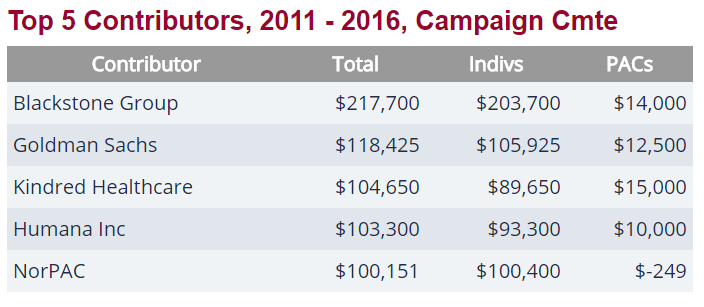
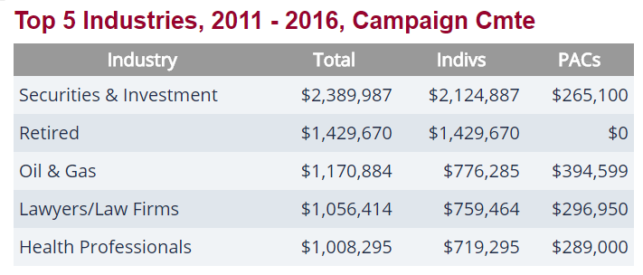

Meet Mitch McConnell Senator (R - KY)


Know your politician
Do ever have doubts that your sensor or repetitive might not have your best interest at heart? Well, this website might help you shed some lite on the subject. The web page allows you to quickly serach, sort and filter politicians by donation amount from corporations.
The data for this site is obtained and updated weekly from